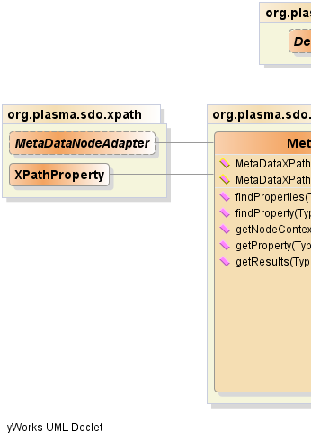
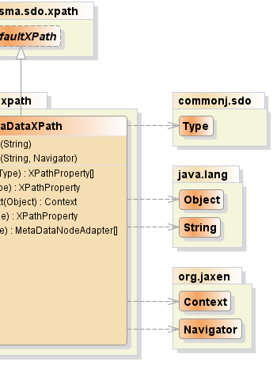

public class MetaDataXPath extends DefaultXPath
Type
graph based on Jaxen.
This is the main entry point for matching an XPath against a set of
Type structures linked by properties.
Predicates typically involve data as well as "meta data". E.g.
/person/[@name='Sam'] where 'Sam' is data and 'person' and 'name' are meta
data. This class accepts only SDO meta data objects such as
Type as input and therefore assumes a given XPath
references only meta data elements. Passing an XPath expression with data
elements will result in zero or null results returned. Use
DataGraphXPath to process mixed data and meta data XPath expressions.
|  |  |
| Constructor and Description |
|---|
MetaDataXPath(java.lang.String xpathExpr) |
MetaDataXPath(java.lang.String xpathExpr,
org.jaxen.Navigator navigator) |
| Modifier and Type | Method and Description |
|---|---|
XPathProperty[] |
findProperties(commonj.sdo.Type root)
Returns an array of Property results, an error being thrown if other than
Property results are found.
|
XPathProperty |
findProperty(commonj.sdo.Type root)
Returns a single Property result or null if no Property results are found.
|
org.jaxen.Context |
getNodeContext(java.lang.Object node) |
XPathProperty |
getProperty(commonj.sdo.Type root)
Returns a single Property result.
|
MetaDataNodeAdapter[] |
getResults(commonj.sdo.Type root)
Returns an array with either 1 single result or multiple results, and error
being thrown if no results are found or if multiple results are found but
the target Property is not a "many" Property, i.e. a multi-valued Property.
|
isXPathaddNamespace, booleanValueOf, createFunctionContext, createNamespaceContext, createVariableContext, debug, evaluate, getContext, getContextSupport, getFunctionContext, getNamespaceContext, getNavigator, getRootExpr, getVariableContext, numberValueOf, selectNodes, selectNodesForContext, selectSingleNode, selectSingleNodeForContext, setFunctionContext, setNamespaceContext, setVariableContext, stringValueOf, toString, valueOfpublic MetaDataXPath(java.lang.String xpathExpr)
throws org.jaxen.JaxenException
org.jaxen.JaxenExceptionpublic MetaDataXPath(java.lang.String xpathExpr,
org.jaxen.Navigator navigator)
throws org.jaxen.JaxenException
org.jaxen.JaxenExceptionpublic org.jaxen.Context getNodeContext(java.lang.Object node)
public MetaDataNodeAdapter[] getResults(commonj.sdo.Type root) throws org.jaxen.JaxenException, InvalidMultiplicityException
IllegalXPathArgumentException - if no results are found or if multiple results are found but the
target Property is not a "many" property, i.e. a multi-valued
Property. The target Property is the result or end point Property
after resolving an XPATH.org.jaxen.JaxenException - as required by the Jaxen APIInvalidMultiplicityException - if the given XPATH resulted in multiple values for a singular
propertypublic XPathProperty[] findProperties(commonj.sdo.Type root) throws org.jaxen.JaxenException, InvalidEndpointException
org.jaxen.JaxenException - as required by the Jaxen APIInvalidEndpointException - when the result or terminating node or nodes are not Property
nodesroot - the SDO Type rootpublic XPathProperty getProperty(commonj.sdo.Type root) throws org.jaxen.JaxenException, InvalidEndpointException
org.jaxen.JaxenException - as required by the Jaxen APIInvalidEndpointException - when the result or terminating node or nodes are not Property
nodes or if no result is found.root - the SDO Type rootpublic XPathProperty findProperty(commonj.sdo.Type root) throws org.jaxen.JaxenException, InvalidEndpointException
org.jaxen.JaxenException - as required by the Jaxen APIInvalidEndpointException - when the result or terminating node or nodes are not Property
nodesroot - the SDO Type rootPlasmaSDO™ and PlasmaQuery™ are trademarks of TerraMeta Software, Inc. Copyright © 2011 - All Rights Reserved.